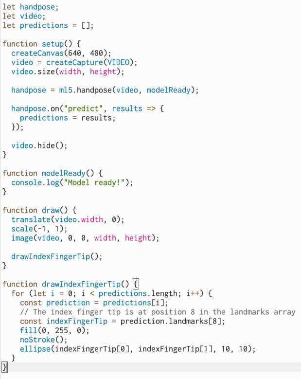

I want to use the ml5js as a basis to only track the index finger, and then add the painting function for my final result.
Here is the code in p5js web editor. I changed the original handpose code into only tracking my index finger.
I recorded a video inside p5js.